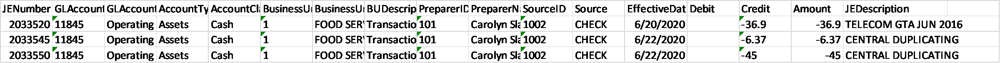

Analytics mindset
ETL
Case 4 – Joining data – Alteryx
For this case, you have received a data file, which is named Analytics_mindset_case_studies_ETL_ Case4_Alteryx.xlsx. It includes 789 lines of journal entries for 11 days from a hotel and conference center (on the tab labeled JELineItems), as well as other important accounting-relevant data sets on these other tabs: ChartOfAccounts (a list of the chart of accounts with 85 records), Source (source listing for the journal entries with 8 records), BusinessUnits (listing of business units with 8 records) and PreparerInfo (an authorized list of preparers with 12 records). The following is a select list of data fields from this file noting the field name and field description tabs on which the data field is located.
Field name
Field description
Tab
JENumber
Unique identifier for each journal entry.
JELineItems
GLAccountNumber
General ledger account number from chart of accounts. The tab labeled GLAccounts contains the full information about the general ledger accounts.
JELineItems and ChartOfAccounts
BusinessUnitID
The business unit number (1 to 8) of the journal entry.
JELineItems, BusinessUnits and PreparerInfo
PreparerID
The employee ID for the employee who initiated the transaction. For transactions recorded initially in a subsystem (e.g., GuestSYS or POS), the PreparerID is listed as the system and not the employee.
Note that the PreparerID is not unique. The company starts all ID numbering over for each business unit. Thus, the combination of the PreparerID and BusinessUnit number is unique for each employee.
JELineItems and PreparerInfo
SourceID
A unique identifier for each Source.
JELineItems and Source
EffectiveDate
The date the entry was posted to the general ledger as occurring. The EffectiveDate is the date that the transaction is posted in the general ledger and recognized as revenue. The corporate office, therefore, is recognizing revenue throughout the year based on this date, rather than the date that it is meeting its performance obligations, which you would consider the “right” effective date for proper accounting treatment. However, the corporate office performs year-end cutoff procedures to account for this at a level of materiality that, year-over-year, would suit corporate and ensure that amounts are properly stated.
JELineItems
JEDescription
Description of the transaction. May include vendor or guest name, etc.
JELineItems
Debit
Debit amount of the entry (positive).
JELineItems
Credit
Credit amount of the entry (negative).
JELineItems
Amount
Total amount of the journal entry line item (may be positive or negative).
JELineItems
AccountType
For each account, a high-level description of which type of general ledger account it is (e.g., asset, liability, equity, expense, revenue).
ChartOfAccounts
AccountClass
For each account, a more detailed description of which type of general ledger account it is (e.g., accounts receivable, cash, payroll expense).
ChartOfAccounts
GLAccountName
Name of the general ledger account from the chart of accounts.
ChartOfAccounts
Source
Describes the payment type or other source type of the transaction (CASH RECEIPT, CHECK, CREDIT CARD RECEIPT, CREDIT MEMO, PAYROLL JV, PAYROLL MANUAL JV, PAYROLL S/B JV, PURCHASE CARD, REGULAR JV).
Source
BusinessUnit
The business unit name (e.g., hotel, food and beverage) of the journal entry.
BusinessUnits
BUDescription
A description of each business unit.
BusinessUnits
PreparerName
The name of the employee.
PreparerInfo
Required
Complete the ETL overview case, which covers the fundamental considerations in the ETL process.
Using Alteryx, prepare an Excel file to reflect all of the journal entries in the JELineItems tab in the data file and also include all of the additional data fields from the remaining tabs in the workbook for each of these journal entries.
Produce an output file in Excel. Submit your Alteryx workflow as a packaged workflow (.yxzp file type [Options > Export Workflow >]) and include your name in the file name. List the fields in the following order in your file.
Field name
JENumber
GLAccountNumber
GLAccountName
AccountType
AccountClass
BusinessUnitID
BusinessUnit
BUDescription
PreparerID
PreparerName
SourceID
Source
EffectiveDate
Debit
Credit
Amount
JEDescription
Your final sheet should look like the following screenshot. The first three rows are provided showing the correct answer.
